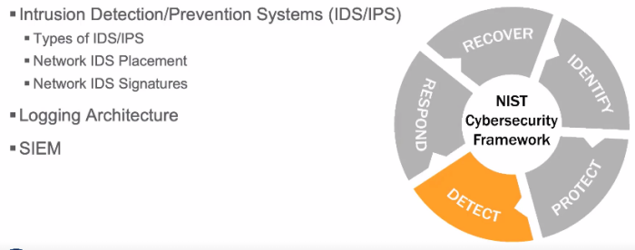

Detect
Types of Intrusion Detection SystemsWhen most people think of IDSs, they only think about network‐based IDSs. There are many types of IDSs that can be used in an ICS environment.
• Host: Sensors reside on the host system.
• Network: What traffic is on your network?
• Application: Web application firewall, database firewall, application protocol IDS.
• Logs: What is happening at the OS level? At the application level?
• Paper: Who came in? Operator’s notebook.
• Anomaly: Any combination of the above